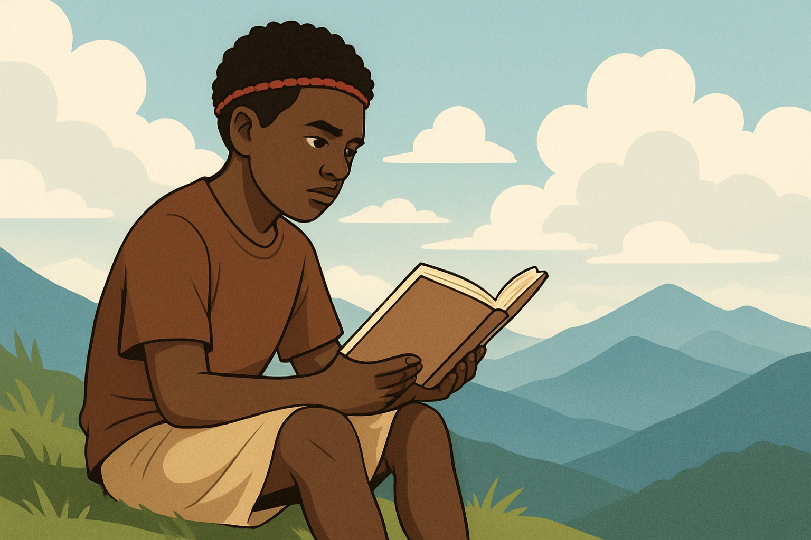

Belajar, Bertumbuh, Membumi
Menumbuhkan semangat belajar dan literasi berbasis komunitas.

Literasi untuk Masa Depan Papua
Berakar kuat pada nilai budaya lokal dan semangat berbagi.
Dekaibooks didirikan pada 20 Maret 2020 di Kontrakan Putri Yahukimo, Yogyakarta, oleh anak-anak muda Yahukimo seperti Renold Dapla, Sarpen Yelemaken, Luis Kabak, Attita, Khristin Keroman, Honince Kobak, Lanige Wonda, dan rekan lainnya. Sebelum terbentuk di Yogyakarta, diskusi dan pertemuan sudah dilakukan di Yahukimo bersama Ence, Gideon, dan lainnya, serta di Jayapura bersama Hengky Yeimo, Ibiroma Wamla, Ardy Bayage, dan Yason Ngelia.
Gerakan Literasi dan Perpustakaan Jalanan Dekaibooks lahir dari keresahan minimnya akses buku dan perpustakaan di Yahukimo—jika pun ada, lokasinya jauh di Kantor Bupati. Berangkat dari kondisi ini, Luis Kabak, Gideon, dan kawan-kawan memulai perpustakaan jalanan pertama di pertigaan Pangkalan Cendrawasih sebagai langkah nyata membuka akses baca bagi masyarakat.
Menjadi wadah diskusi, riset, dan pengembangan pendidikan budaya yang berakar pada kearifan lokal Yahukimo.
"Belajar, Bertumbuh, Membumi" adalah visi Kami yang mencerminkan semangat untuk terus mengembangkan pengetahuan, memperkuat kapasitas diri dan komunitas, sekaligus berpijak pada nilai-nilai dan kearifan lokal. Kami percaya bahwa proses belajar tidak hanya untuk diri sendiri, tetapi juga untuk menumbuhkan generasi yang kritis, berdaya, dan mampu berkontribusi bagi lingkungannya, tanpa kehilangan akar budaya yang menjadi identitas bersama.
Program Perpustakaan Jalanan bertujuan untuk membuka akses buku gratis di ruang publik dan kampung-kampung terpencil. Kami percaya bahwa setiap individu berhak mendapatkan kesempatan untuk membaca dan belajar, terlepas dari lokasi geografis mereka.
SelengkapnyaKelas Literasi kami menyediakan pelatihan membaca, menulis, dan berbicara yang dirancang khusus untuk anak-anak dan remaja. Melalui program ini, kami berupaya meningkatkan kemampuan literasi dasar dan menumbuhkan kecintaan mereka terhadap ilmu pengetahuan.
SelengkapnyaKegiatan Seni & Budaya kami berfokus pada pengenalan dan pelestarian budaya lokal melalui berbagai bentuk seni dan cerita. Kami mengadakan lokakarya, pertunjukan, dan sesi bercerita untuk memastikan kearifan lokal tetap hidup dan diwariskan kepada generasi muda.
SelengkapnyaKoordinator
"Berkomitmen memajukan literasi di Yahukimo."
Literasi Anak
"Menciptakan generasi pembaca sejak dini."
Dokumentasi
"Mengabadikan setiap momen berharga."
Kegiatan Budaya
"Melestarikan kearifan lokal melalui seni."
Pelatihan literasi membaca merupakan sebuah pelatihan yang berfokus pada peningkatan minat baca pada anak muda. Kami mengadakan sesi interaktif dan menyediakan berbagai jenis buku untuk menarik perhatian mereka.
Sesi diskusi komunitas adalah wadah bagi masyarakat untuk berbagi ide, pengetahuan, dan pengalaman. Kami membahas berbagai topik, mulai dari isu lokal hingga perkembangan global, untuk memperluas wawasan bersama.
Inisiatif Perpustakaan Jalanan membawa buku-buku langsung ke tengah masyarakat, terutama di daerah yang sulit dijangkau. Kami menyediakan akses mudah ke bahan bacaan untuk semua kalangan usia.
Pelatihan menulis kami dirancang untuk mengasah kemampuan ekspresi diri melalui tulisan. Peserta diajarkan teknik dasar penulisan, mulai dari penulisan kreatif hingga penulisan laporan, untuk berbagai keperluan.
Melalui kegiatan seni dan budaya lokal, kami berupaya melestarikan dan mempromosikan warisan budaya Yahukimo. Kami mengadakan pertunjukan tari, musik tradisional, dan pameran kerajinan tangan.
Kami menyediakan lingkungan belajar yang menyenangkan dan interaktif bagi anak-anak. Melalui permainan edukatif dan aktivitas kreatif, kami mendorong mereka untuk mengembangkan rasa ingin tahu dan semangat belajar.
Dukungan Anda sangat berarti bagi keberlangsungan program-program literasi kami di Yahukimo, Papua. Setiap donasi akan digunakan untuk pengadaan buku, penyelenggaraan kelas, dan kegiatan budaya.
Anda dapat berdonasi melalui:
Scan QRIS / transfer ke rekening BRI 1234-567-890 a.n. Dekaibooks Yahukimo.
 Donasi Sekarang
Donasi Sekarang
Jangan ragu untuk menghubungi kami jika Anda memiliki pertanyaan, saran, atau ingin berkolaborasi.
Email: info@dekaibooks.org
WhatsApp: +62 812 3456 7890
Instagram: @dekaibooks